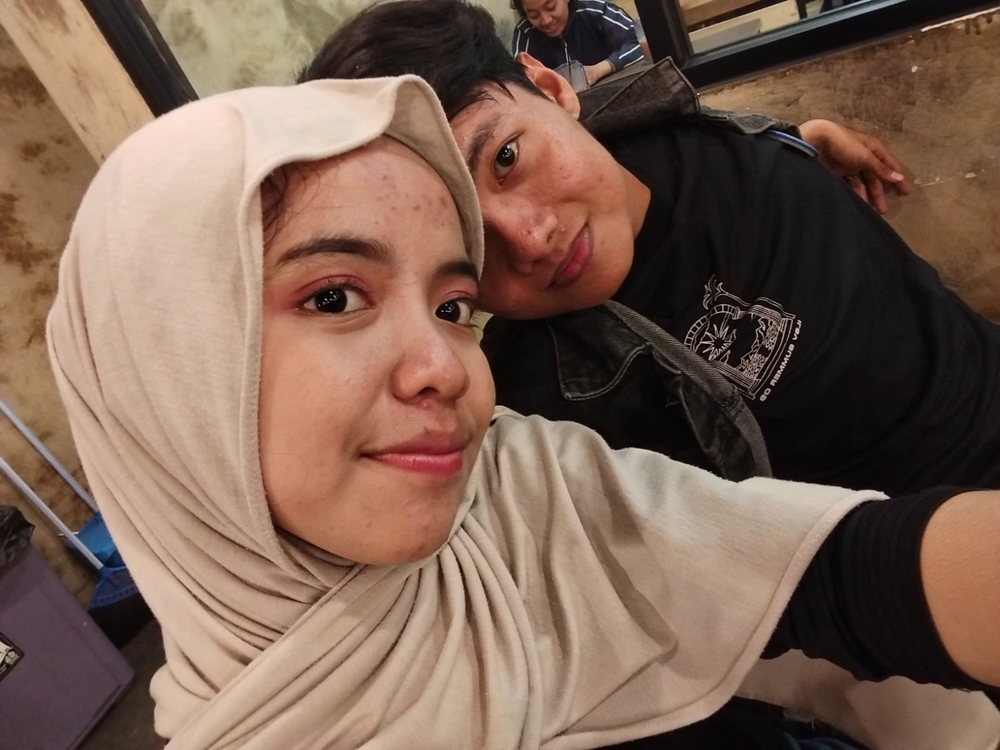
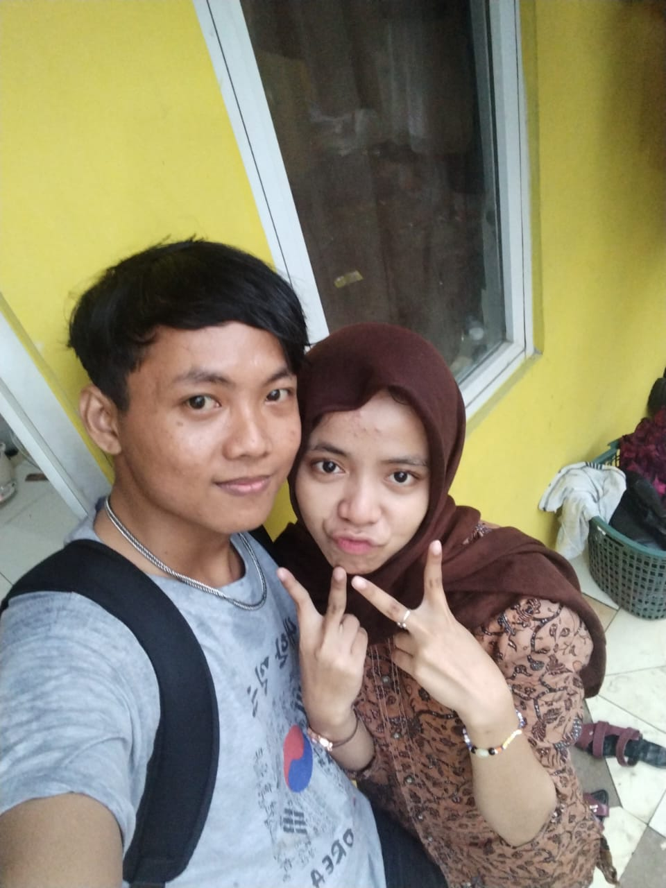

Memutar waktu ke 10 bulan yang lalu, ke 05 Oktober 2025…
Untuk kamu, Cintaku
Selamat Datang di Cerita Kita
Sebelum kamu lanjut, tarik napas dulu ya, pelan-pelan saja. Ini
bukan sekadar halaman biasa — ini kumpulan rasa yang aku rapikan
jadi satu, supaya kamu tahu betapa berartinya 10 bulan ini bagiku,
terhitung sejak 05 Oktober 2025.
10Bulan Bersama
2Bulan Dekat
8Bulan LDR
Bab Satu — Awal Mula
Waktu Kita Masih Bisa Bertemu Setiap Hari
Semua berawal dari pertemuan yang sederhana, tanggal 05 oktober
2025. Tidak ada kembang api, tidak ada momen dramatis — hanya dua
orang yang perlahan jadi nyaman satu sama lain. Dua bulan pertama
itu isinya sederhana: jalan bareng, ngobrol sampai lupa waktu, dan
hal-hal kecil yang ternyata paling aku rindukan sekarang.
Waktu itu aku belum tahu, bahwa dua bulan yang manis itu sedang
menyiapkan aku untuk sembilan bulan yang jauh lebih berat — tapi
juga jauh lebih membuktikan bahwa rasa ini nggak main-main.


Bab Dua — Sembilan Bulan Jarak
Jarak yang Tidak Pernah Benar-Benar Memisahkan
Sejak itu, kita cuma bisa saling menyapa lewat panggilan video dan
pesan yang kadang terlambat dibalas karena sinyal atau karena
ketiduran duluan. Tapi entah kenapa, tiap malam rasanya kita masih
menatap langit yang sama, memikirkan orang yang sama.
Aku
✈
Kamu
Bab Tiga — Menuju Toga
Aku Menulis Skripsi, Kamu yang Terus Menyemangati
Di tengah jarak yang sudah cukup melelahkan, aku masih harus
berjuang dengan revisi, bimbingan dosen, dan tenggat waktu yang
rasanya tidak ada habisnya. Kamu tidak selalu bisa hadir secara
fisik, tapi kamu selalu ada di setiap keluh kesahku, setiap kali aku
bilang "capek" jam 2 pagi, dan setiap kali aku akhirnya tersenyum
karena satu revisi selesai.
Dan akhirnya — sampai juga di titik ini. Terima kasih sudah jadi
tempatku pulang cerita, sudah menemani dari jauh tanpa pernah
membuatku merasa sendirian, sampai nanti tiba hari wisudaku.
Kenangan yang Tersimpan
Sebagian Kecil dari Banyak Momen Kita
Ini baru sebagian. Nanti akan terus bertambah setiap kali ada momen
baru yang layak disimpan.
✉
Sebuah Surat Kecil
Penutup — Untuk Sekarang
10Bulan
Selamat 10 Bulan, Cintaku
Dari pertemuan pertama di 05 Oktober 2025, dua bulan yang dekat,
sembilan bulan yang jauh, sampai perjuangan skripsiku — makasih
sudah menjalani semuanya bersama aku. Ini bukan akhir cerita, cuma
penutup untuk bab yang sudah kita lewati, sebelum kita mulai bab
ke-12 dan seterusnya.
— Selalu menatap langit yang sama denganmu, hari ini dan nanti